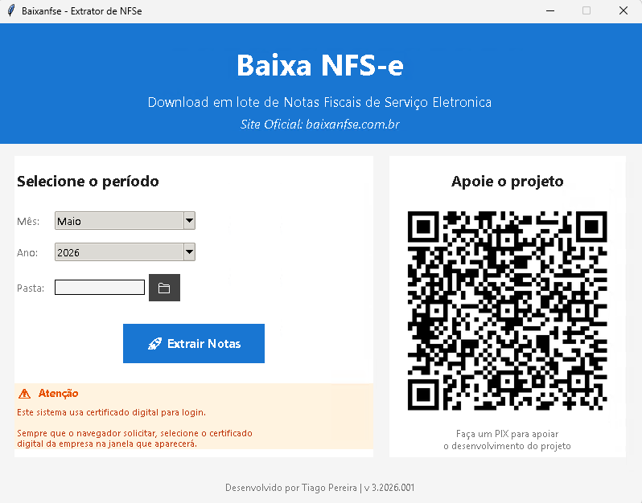

⬇️ Baixar Agora
Versão 1.6.4

O Baixa NFS-e foi desenvolvido por um profissional contábil que precisava de uma ferramenta que realmente funcionasse bem e fosse gratuita. Por isso, o download é totalmente gratuito.
Doações são bem-vindas e ajudam a manter o projeto, mas não garantem manutenção, suporte técnico ou atualizações futuras. Use por sua conta e risco.